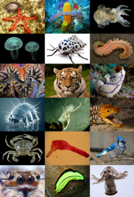

 Живо́тные (лат. Animalia) — традиционно (со времён Аристотеля) выделяемая категория организмов, в настоящее время рассматривается в качестве биологического царства. Животные являются основным объектом изучения зоологии. Животные относятся к эукариотам (в клетках имеются ядра). Классическими признаками животных считаются: гетеротрофность (питание готовыми органическими соединениями) и способность активно передвигаться. Впрочем, существует немало животных, ведущих неподвижный образ жизни, а гетеротрофность свойственна также грибам и некоторым растениям-паразитам. Русское слово «животное» образовано от «живот», в прошлом означавшего «жизнь, имущество». В быту под терминами «дикие животные», «домашние животные» часто понимаются только млекопитающие или четвероногие наземные позвоночные (млекопитающие, пресмыкающиеся и земноводные). Однако в науке за термином животные закреплено более широкое значение, соответствующее латинскому Animalia. В научном смысле к животным, помимо млекопитающих, пресмыкающихся и земноводных, относится огромное множество других организмов: рыбы, птицы, насекомые, паукообразные, моллюски, морские звёзды, всевозможные черви и т.д. При этом ранее к этому царству относили многих гетеротрофных протистов и делили животных на подцарства: одноклеточные Protozoa и многоклеточные Metazoa. Сейчас название «животные» в таксономическом смысле закрепилось за многоклеточными. В таком понимании животные как таксон имеют более определённые признаки — для них характерны оогамия, многотканевое строение, наличие как минимум двух зародышевых листков, стадий бластулы и гаструлы в зародышевом развитии. Человек относится к царству животных, но традиционно изучается отдельно. У подавляющего большинства животных есть мышцы и нервы, а не имеющие их группы — губки, пластинчатые, мезозои, книдоспоридии — возможно, лишились их вторично. В то же время, в науке термин «животные» иногда предлагается использовать и в ещё более широком значении, подразумевая под животными не таксон, а тип организации — жизненную форму, основанную на подвижности. В настоящее время (Zhang, 2013) учёными описано более 1,6 млн видов животных (включая более 133 тыс. ископаемых видов; Zhang, 2013), большинство из которых составляют членистоногие (более 1,3 млн видов, 78 %), моллюски (более 118 тыс. видов) и позвоночные (более 42 тыс. видов).